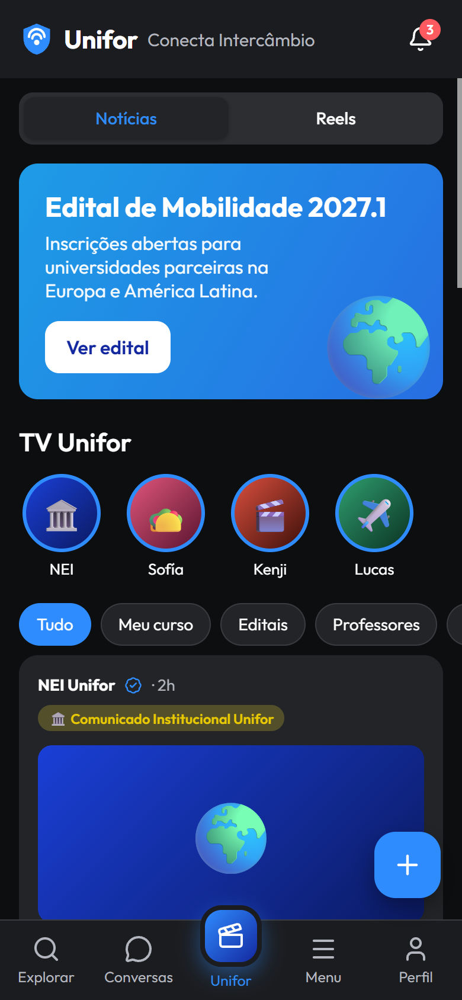
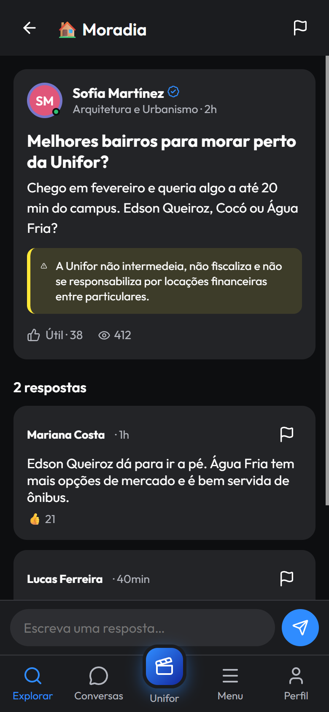
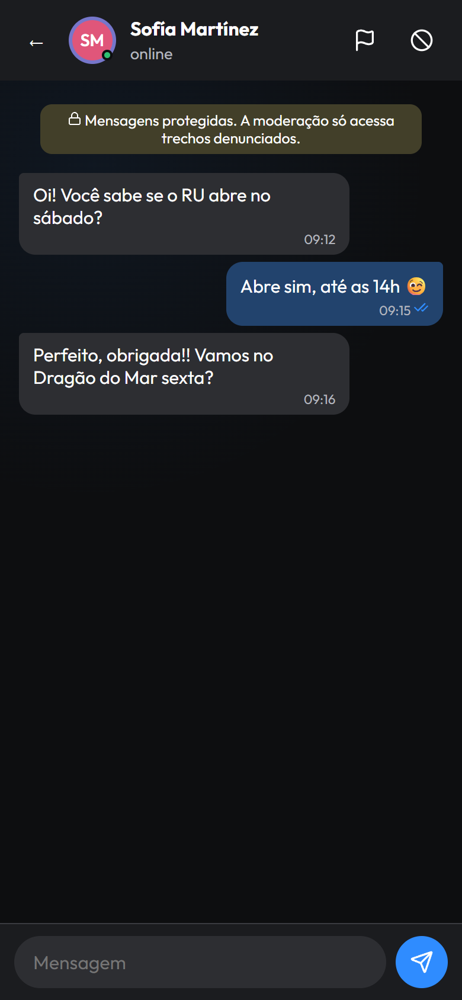
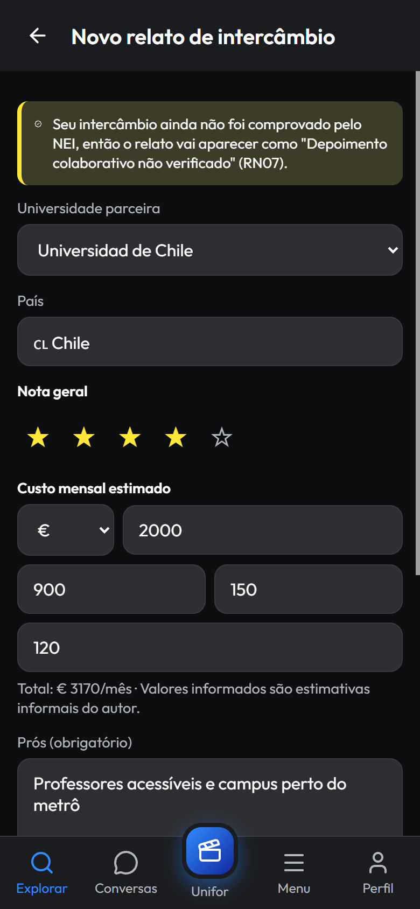
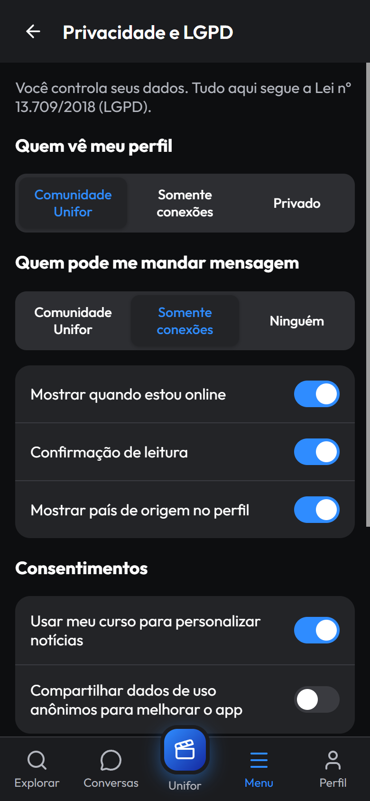

A rede social acadêmica da internacionalização Unifor: notícias oficiais, guia da cidade, conversas e relatos de intercâmbio em um só app
Nikolas Vianna de Carvalho · Arthur Maia Roberto · Bruno Vasconcelos Rocha
Requisitos e Modelagem de Sistemas · Prof. Marcelo Bezerra · Pitch final, 01/12/2026
▶ Protótipo: nikolasvianna-hub.github.io/conecta-intercambio
⌨ Repositório: github.com/Nikolasvianna-hub/conecta-intercambio
Quem vai ou vem de intercâmbio na Unifor depende de informação espalhada e de contatos informais, antes, durante e depois da mobilidade.
Editais, visto, seguro e equivalências ficam em murais, e-mails, PDFs e grupos de WhatsApp que somem.
O estudante estrangeiro chega sem conhecer ninguém, nem o campus, nem como tirar documentos em Fortaleza.
Ex-intercambistas sabem custos, moradia e disciplinas, mas não há um lugar formal para registrar isso.
Ofertas de aluguel circulam sem moderação em redes abertas, com risco de golpe e desinformação.
Alunos locais querem praticar idiomas e estrangeiros querem aprender português, mas falta quem os aproxime.
Instagram e WhatsApp não verificam vínculo com a Unifor, não separam o que é oficial e não seguem a LGPD.
Descrição: aluno estrangeiro em mobilidade na Unifor, como a Sofía, de Salamanca.
Necessidade: se orientar na cidade, achar moradia segura e fazer amigos nas primeiras semanas.
Prioridade altaDescrição: aluno da Unifor que vai ou quer ir para fora, como o Pedro, rumo ao Chile.
Necessidade: editais no prazo, custo de vida real e equivalência de disciplinas.
Prioridade altaDescrição: quem já voltou (alumni) ou aluno local voluntário no Programa Buddy.
Necessidade: compartilhar experiência e acolher quem chega, com reconhecimento institucional.
Prioridade médiaDescrição: Assessoria de Relações Internacionais, TV Unifor e coordenações de curso.
Necessidade: um canal oficial único, com selo, e menos atendimentos repetidos no balcão.
Prioridade altaUm app mobile-first, com a cara do Unifor Mobile, só para a comunidade da Unifor: vínculo verificado, conteúdo oficial separado do conteúdo dos alunos e moderação.
Tecnologia: protótipo React 19 + TypeScript + Vite (PWA), publicado no GitHub Pages; arquitetura alvo com API REST, WebSocket e PostgreSQL.
Autenticação: e-mail institucional Unifor ou código de aceite do intercambista (RN02).
Rastreabilidade: necessidade → requisito → regra → caso de uso → componente → tela → issue.
Acessibilidade: 3 idiomas (PT, EN, ES), tema claro/noturno e contraste mínimo de 4,5:1.
Cinco abas, no padrão do Unifor Mobile. São 23 requisitos funcionais e 23 casos de uso especificados no SRS.
Jornal da universidade: editais com selo oficial, professores, eventos, TV Unifor e reels. Filtro "Meu curso". RF05, RF12, RF21
Guia da cidade por categoria, fórum "Em alta" com votos de "Útil", aviso de isenção em moradia, relatos e equivalências. RF08, RF15, RF16, RF18
Mensagens 1-1 e em grupo, pedidos de mensagem, busca de pessoas, conectar, bloquear e denunciar. RF03, RF17, RF22
Idioma, aparência, privacidade e LGPD (baixar ou excluir dados), notificações, Buddy, agenda e moderação. RF06, RF09, RF13, RF19, RF20
Dados de intercâmbio, idiomas, selo de vínculo e notícias do meu curso. RF02, RF21
Denúncia em todo conteúdo, painel de moderação com justificativa e log de auditoria. RF10, RF11 · RN05, RN10
Protótipo navegável, ao vivo em nikolasvianna-hub.github.io/conecta-intercambio. Roteiro: login → edital oficial → moradia → conversa → novo relato → privacidade.

Uniforedital com selo oficial
Explorarmoradia com aviso (RN08)
Conversassó com conexões (RN11)
Novo relatocustos, prós e contras (RF08)
Privacidadeconsentimentos LGPD (RF20)Cada sprint é uma milestone no GitHub, com as issues fechadas pelos commits e pull requests que entregaram o trabalho.
Guia da cidade, fórum e Buddy desde o primeiro dia.
Relatos com custos por categoria, prós e contras, e equivalências.
Vínculo verificado, moderação, denúncia e controle dos próprios dados.
Editais com selo e segmentados por curso, sem se perder entre posts.
Dúvidas comuns respondidas no fórum e no relato de quem já foi.